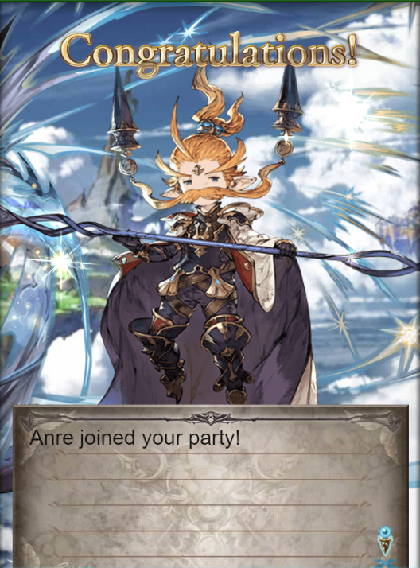
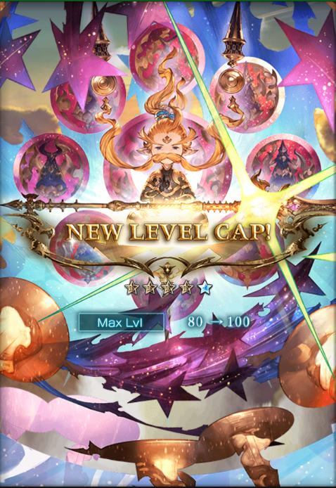
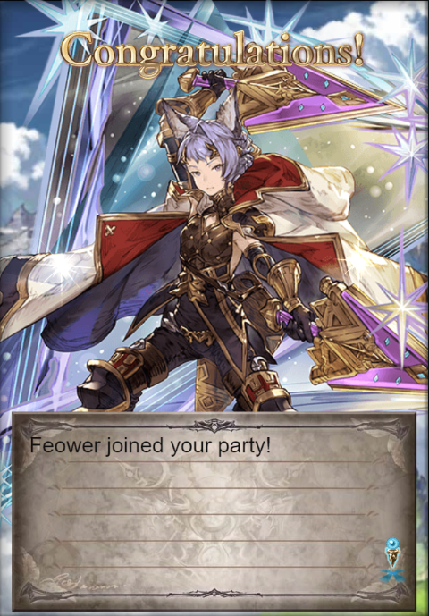
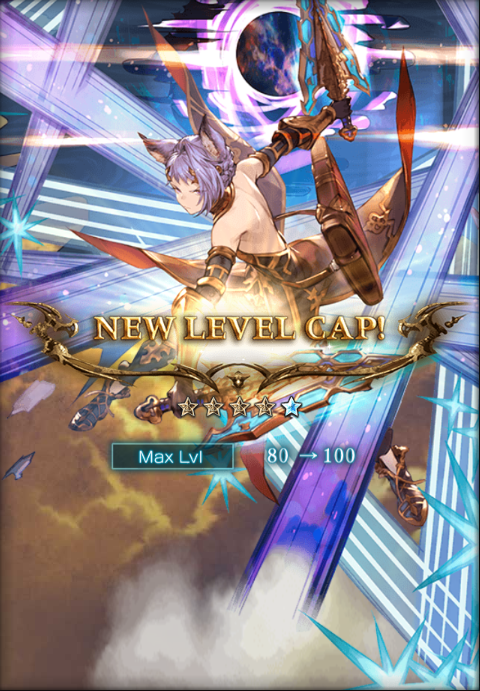
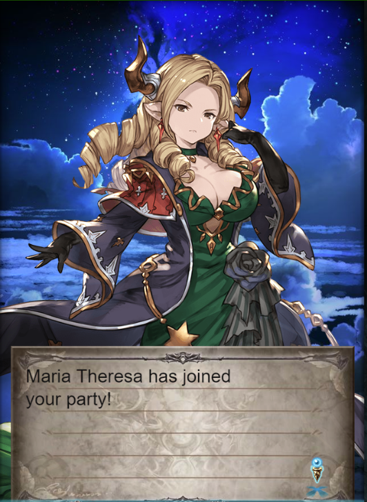
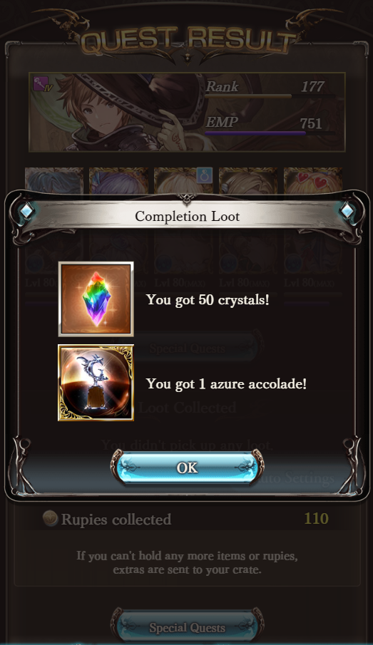
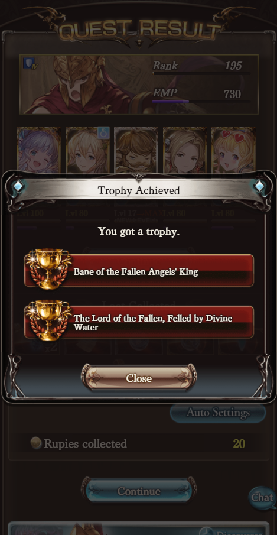
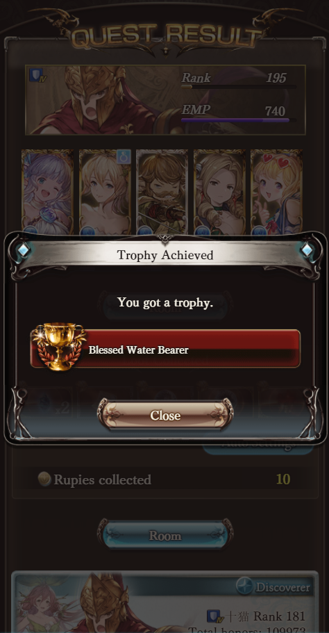

02/25/2020 - Uno/Anre
08/09/2020 - 5* Uno/Anre
09/04/2020 - Quatre/Feower
09/04/2020 - 5* Quatre/Feower
02/10/2020 - Maria Theresa
04/02/2020 - Nalhegrande Great Wall (Proud) cleared
08/28/2020 - Luci HL cleared
08/30/2020 - Luci HL cleared 5 times
